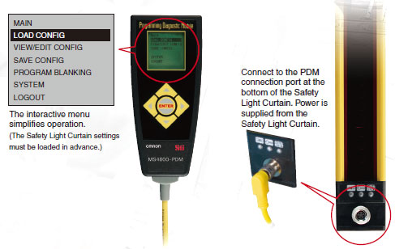

Unlike conventional Safety Light Curtains, the MS4800 Series uses a thick aluminum case (3 mm at its thinnest parts). This makes it ideal for applications with considerable vibration or impacts.
Building Automation
Industrial Automation
Power Automation & Safety


Bangladesh Distributor
MS4800 Series
Safety Light Curtain

Safety Light Curtains with Durable, Impact-resistant Body and Long, 20-m Sensing Distance
about this Product Family
Related Contents
- Safety Sensors
- Features
- Lineup
- Specifications
- Dimensions
- Catalog
last update: December 19, 2013
Durable Housing with a Thickness of 3 mm Min. Withstands Vibration and Impacts
Long Maximum Sensing Distance of 20 m
The long, 20-m maximum sensing distance of the MS4800 Series marks the highest level in the industry. Even in applications where large, complicated machines are guarded, the use of mirrors can reduce the number of Safety Light Curtains required.
A Wide Lineup for a Variety of Applications
Two series are available to meet your needs: the Advanced Series with sophisticated functions and the Basic Series with specialized, basic functions.
Series Connection of Up to Four Systems with No Controller Necessary
(Allowing a total of 256 beams max.) (MSF4800 only)
Up to four systems can be connected in series (for a total of 256 beams) without having to connect a controller. Models for which the smallest detectable object is different can even be connected to respond flexibly to virtually any application.
Intuitive Operation with the Programming and Diagnostics Module (PDM)
Complete with an LCD that displays in either English or Japanese, the PDM makes it easy and intuitive to program, change settings, and troubleshoot the MS4800 Series.
- Easy operation with five function buttons.
- Allows setting changes and status monitoring.
- IP65 protection.
- Safety outputs operate while the PDM is connected, making it possible to monitor during operation.

Easy-to-understand Individual Beam Indicators (IBI)
The MS4800-series Receiver is equipped with OMRON STI's unique Individual Beam Indicator (IBI) function. When a beam is interrupted, or when it is out of alignment, an individual LED lights at each corresponding Receiver beam position to notify the operator. This makes it easy to align beams even from a distance. An error code is also displayed when an error is occurs. (This function is provided only on the Receiver.)
Four Blanking Functions for Disabling Beams (Advanced series only)
When a machine or a workpiece is present inside the sensing area of the Safety Light Curtain, the output turns OFF and the machine cannot be started. However, a blanking function can be used to disable the appropriate beams of the Safety Light Curtain and allow work to continue without stopping the machine. The MS4800 Series provides four blanking functions to combine both safety and productivity in a wide range of applications.
Fixed Blanking
This function is used when a machine or workpiece constantly interrupts beams in a part of the sensing area. Fixed Blanking allows the Safety Light Curtain to remain in the RUN state while the obstruction is fixed (as a non-moving object) within the sensing area. The output is turned OFF when a beam other than the set fixed blanking beams is interrupted, or when light is incident on a fixed blanking beam.
Floating Blanking
This function turns OFF the output when the total number of interrupted beams inside the sensing area exceeds the number of set beams (1 or 2).
Monitored Blanking
This function is used when a machine or workpiece constantly interrupts beams in a part of the sensing area and moves within the sensing area. Monitored Blanking allows the Safety Light Curtain to remain in the RUN state while the obstruction moves within the sensing area. The output is turned OFF when the machine or workpiece disappears from the monitored blanking area that was set by teaching, or when the total number of interrupted beams increases due to a different obstruction.
Reduced Resolution Blanking
When the resolution of the MS/MSF4800A is reduced, the size of the smallest detectable object is increased. The output will not turn OFF regardless of how many continuous interrupted beams there are in the sensing area as long as the beams are fewer than the set number (1, 2, or 3 beams). When an object whose size exceeds the set number of beams intrudes, the output is turned OFF. For example, in an application where a conveyor cart approaches a robot work area, the Safety Light Curtain can be set so that it does not detect only the wheels of the cart, allowing the MS/MSF4800A to be used as a presence sensing device.
Muting Functions for Temporarily Disabling the Safety Light Curtain (MSF4800A only)
In applications where it is necessary for an object to regularly pass through the sensing area, for example to supply workpieces to a machine, the output will turn OFF each time the object passes through, thus lowering productivity. The muting function makes it possible to raise productivity in this kind of application by temporarily disabling the Safety Light Curtain.
Select from among four muting modes to match each application with the appropriate number and placement of muting sensors.
Complies with the Newest Global Safety Standards
The MS4800-series Safety Light Curtains comply with ISO 13849-1 (Safety Category 4, Ple).
They are Type 4 safety light curtains under the IEC 61496-1 and IEC 61496-2 international standards for safety light curtains. They also comply with the IEC 61508 (SIL3) international standard for function safety.
These standards ensure safe, reliable use virtually anywhere.
last update: December 19, 2013